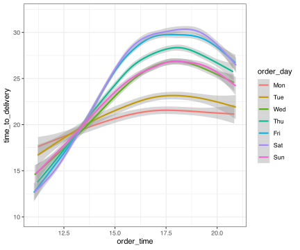
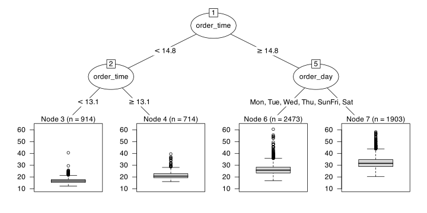

library(tidymodels)
#> ── Attaching packages ────────────────────────────────────── tidymodels 1.1.1 ──
#> ✔ broom 1.0.5 ✔ recipes 1.0.7
#> ✔ dials 1.2.0 ✔ rsample 1.2.0
#> ✔ dplyr 1.1.3 ✔ tibble 3.2.1
#> ✔ ggplot2 3.4.3 ✔ tidyr 1.3.0
#> ✔ infer 1.0.4 ✔ tune 1.1.2
#> ✔ modeldata 1.2.0 ✔ workflows 1.1.3
#> ✔ parsnip 1.1.1 ✔ workflowsets 1.0.1
#> ✔ purrr 1.0.2 ✔ yardstick 1.2.0
#> ── Conflicts ───────────────────────────────────────── tidymodels_conflicts() ──
#> ✖ purrr::accumulate() masks foreach::accumulate()
#> ✖ purrr::discard() masks scales::discard()
#> ✖ dplyr::filter() masks stats::filter()
#> ✖ dplyr::lag() masks stats::lag()
#> ✖ recipes::step() masks stats::step()
#> ✖ purrr::when() masks foreach::when()
#> • Learn how to get started at https://www.tidymodels.org/start/
tidymodels_prefer()An Introduction to tidymodels
Max Kuhn
Modeling in R
R has always had a rich set of modeling tools that it inherited from S. For example, the formula interface has made it simple to specify potentially complex model structures.
R has cutting-edge models. Many researchers in various domains use R as their primary computing environment and their work often results in R packages.
It is easy to port or link to other applications. R doesn’t try to be everything to everyone.
Modeling in R
However, there is a huge consistency problem. For example:
- There are two primary methods for specifying what terms are in a model. Not all models have both.
- 99% of model functions automatically generate dummy variables.
- Many package developers don’t know much about the language and omit OOP and other core R components.
Two examples follow…
Between-Package Inconsistency
The syntax for computing predicted class probabilities:
MASSpackage:predict(lda_fit)statspackage:predict(glm_fit, type = "response")mdapackage:type = "posterior"rpartpackage:type = "prob"RWekapackage:type = "probability"
and so on.
Model Interfaces
Which of these packages has both a formula and non-formula (x/y) interface to the model?
glmnetrangerrpartsurvivalxgboost
Model Interfaces
Which of these packages has both a formula and non-formula (x/y) interface to the model?
glmnet(matrix only)ranger(both but weirdly)rpart(formula only)survival(formula only)xgboost(special sparse matrix only, classes are zero-based integers)
Is there such a thing as a systems statistician?
tidymodels: Our job is to make modeling data with R less frustrating better.
It’s actually pretty good
“Modeling” includes everything from classical statistical methods to machine learning.
The Tidyverse
All tidyverse packages share an underlying design philosophy, grammar, and data structures.
The principles of the tidyverse:
- Reuse existing data structures.
- Compose simple functions with the pipe.
- Embrace functional programming.
- Design for humans.
This results in more specific conventions around interfaces, function naming, etc.
The Tidyverse
For example, we try to use common prefixes for auto-complete: tune_grid(), tune_bayes(), …
There is also the notion of tidy data:
- Each variable forms a column.
- Each observation forms a row.
- Each type of observational unit forms a table.
Based on these ideas, we can create modeling packages that have predictable results and are a pleasure to use.
Tidymodels
tidymodels is a collection of modeling packages that are designed in the same spirit as the tidyverse.
My goals for tidymodels are:
Smooth out diverse interfaces.
Encourage empirical validation
Quietly coerce good data usage.
Build highly reusable infrastructure.
Enable a wider variety of methodologies.
Leveling Up Our Tools
- more categorical econding methods
- effect encoding methods
- feature hashing
- multiple choice predictors
- modern dimension reduction
- UMAP
- manifold-based multidimensional scaling
- additional imputation tools
etcetera
Tidy Modeling with R
(tmwr.org)
Selected tidymodels Packages
broomtakes the messy output of built-in functions in R, such aslm,nls, ort.test, and turns them into tidy data frames.recipesis a general data preprocessor with a modern interface. It can create model matrices that incorporate feature engineering, imputation, and other tools.rsamplehas infrastructure for resampling data so that models can be assessed and empirically validated.parsnipgives us a unified modeling interface.tunehas functions for grid search and sequential optimization of model parameters.
Example Data
Let’s look at some data on delivery times for a restaurant.
(n = 10,012)
We want to predict the time_to_delivery based on some basic predictors.
order_time(double)order_day(factor)distance(double)item_01, …,item_27(counts)
Outcome distribution

Splitting the data
We’ll split the data into training (60%), validation (20%), and testing (20%).
Stratification helps ensure the three outcome distributions are about the same.
set.seed(91)
delivery_split <-
initial_validation_split(deliveries,
prop = c(0.6, 0.2),
strata = time_to_delivery)
delivery_split
#> <Training/Validation/Testing/Total>
#> <6004/2004/2004/10012>
delivery_train <- training(delivery_split)
delivery_val <- validation(delivery_split)
# To treat it as a single resample:
delivery_rs <- validation_set(delivery_split)A Nonlinear Effect
Actually A Nonlinear Interaction
What are our features?
This just initializes the recipe by recording column roles and types.
What are our features?
Each step_ function takes dplyr selectors.
The default naming is much better (e.g., order_day_Fri).
There are many steps that encode categorical predictors. See Encoding Categorical Data in Tidy Models with R.
What are our features?
Other selectors are:
all_nominal(),all_numeric(), andhas_type()all_predictors(),all_outcomes(), andhas_role()all_numeric_predictors()andall_nominal_predictors()tooStandard
dplyrselectors likestarts_with()and so on.
What are our features?
Removes any predictor columns with a single unique value (i.e., “zv” = zero-variance).
There is also a step for nearly zero-variance columns.
What are our features?
There are a variety of basis expansion steps. This creates additional columns in the data set.
Why 5 degrees of freedom?
What are our features?
We can optimize the degrees of freedom using model tuning.
We’ll stick with 5 for now.
Remember that our nonlinear patterns depend on the day?
The day indicators are named order_day_{level}.
We should make interaction terms!
What are our features?
This selects all of the correct indicator values and crosses them with all of the spline model terms.
What are our features?
delivery_rec <-
recipe(time_to_delivery ~ ., data = delivery_train) %>%
step_dummy(all_factor_predictors()) %>%
step_zv(all_predictors()) %>%
step_spline_natural(order_time, deg_free = 5) %>%
step_interact(~ starts_with("order_day"):starts_with("order_time")) %>%
step_normalize(all_numeric_predictors())Let’s fit a linear regression model!
With parsnip, we first create an object that specifies the type of model and then the software engine to do the fit.
Linear regression specification
This says “Let’s fit a model with a numeric outcome, and intercept, and slopes for each predictor.”
- Other model types include
nearest_neighbors(),decision_tree(),arima_reg(), and so on.
The set_engine() function gives the details on how it should be fit.
Let’s fit it with…

Let’s fit it with…
Let’s fit it with…
Let’s fit it with…
Let’s fit it with…
Let’s fit it with…

Let’s fit it with…
A modeling workflow
We can optionally bundle the recipe and model together into a pipeline workflow:
Fitting and prediction are very easy:
A Better Interface
fit_resamples() uses the out-of-sample data to estimate performance:
ctrl <- control_resamples(save_pred = TRUE)
glmnet_res <- glmnet_wflow %>%
# We can use our validation set!
fit_resamples(resamples = delivery_rs, control = ctrl)
collect_metrics(glmnet_res)
#> # A tibble: 2 × 6
#> .metric .estimator mean n std_err .config
#> <chr> <chr> <dbl> <int> <dbl> <chr>
#> 1 rmse standard 2.36 1 NA Preprocessor1_Model1
#> 2 rsq standard 0.885 1 NA Preprocessor1_Model1Plot the Data!
The only way to be comfortable with your data is to never look at them.
But What About Those parameters?
We probably don’t have a good idea of what deg_free, penalty, and mixture should be.
As seen before, we could mark them for tuning and optimize them.
Instead, we’ll try a different model and show how to tune the model.
Let’s Try Cubist.
It is a rule-based ensemble. Rules are paths through a tree. Here are 4 rules:
It can create many rule sets to form an ensemble.
Example Rules
if
order_time <= 13.715
order_day in {Fri, Sat}
distance <= 5.08
then
outcome = -24.3334 + 2.97 order_time + 1.13 distance + 0.6 item_10
+ 0.4 item_09 + 0.6 item_21 + 0.5 item_01 + 0.3 item_24
+ 0.3 item_08 + 0.3 item_03 + 0.3 item_13 + 0.2 item_02
+ 0.2 item_07if
order_time > 20.038
order_day = Sat
then
outcome = 47.04085 - 1.45 order_time + 3.38 distance + 1.6 item_08Model tuning
We’ll evaluate 25 model candidates using a space-filling design and evaluate them on the validation set:
cubist_res <-
cubist_wflow %>%
tune_grid(resamples = delivery_rs, grid = 10)
show_best(cubist_res, metric = "rmse", n = 3)
#> # A tibble: 3 × 7
#> committees .metric .estimator mean n std_err .config
#> <int> <chr> <chr> <dbl> <int> <dbl> <chr>
#> 1 96 rmse standard 1.98 1 NA Preprocessor1_Model05
#> 2 44 rmse standard 1.98 1 NA Preprocessor1_Model02
#> 3 28 rmse standard 1.98 1 NA Preprocessor1_Model08Model tuning
Next Steps
From here, we would
- tune a variety of models and/or recipes
- pick a model that we like the most
- finalize the model’s tuning parameters
- fit it to the entire training set
- verify the results with the test set
The last three steps can be done with a single function called last_fit().
Other tools
Some other things to do with these data:
Development
Recent updates:
- censored data models (a.k.a survival analysis)
- case weights
- conformal inference tools for prediction intervals
In-process:
- model fairness metrics and modeling techniques
- causal inference methods
- a general set of post-processing tools
Thanks
Thanks for the invitation to speak today and sharing your Mate!
The tidymodels team: Hannah Frick, Emil Hvitfeldt, and Simon Couch.
Special thanks to the other folks who contributed so much to tidymodels: Davis Vaughan, Julia Silge, Edgar Ruiz, Alison Hill, Desirée De Leon, our previous interns, and the tidyverse team.